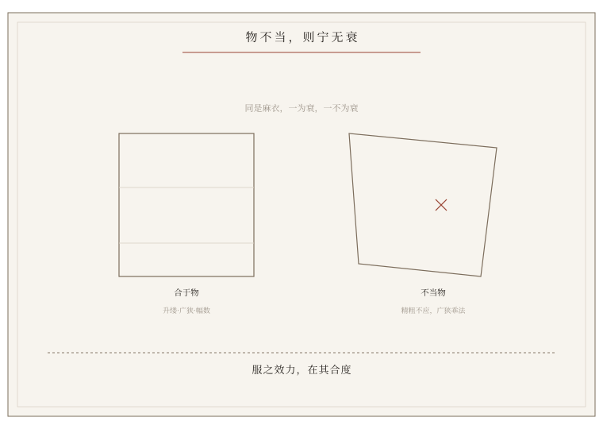

檀弓上 · 三·四十三 · 第 246 课
衰，与其不当物也，宁无衰。齐衰不以边坐，大功不以服勤。注「恶其乱礼。不当物，谓精粗广狭不应法制」「为亵丧服。边，偏倚也」。
说什么事：丧服的形制就是它的义；形制一坏，宁可不服。
落在哪一层：礼，兼及礼数与礼器。
为何编在此位：上节论人之至，此节论服之制。至者不可责众，制者不可假借。
【经】衰，與其不當物也，寧無衰。齊衰不以邊坐，大功不以服勤。
【注】恶其乱礼。不当物，谓精粗广狭不应法制。为亵丧服。边，偏倚也。
【疏】此一节论衰裳升数形制必须依礼，及著服不得为亵之事。「衰，与其不当物也」者，此语乃通于五服，而初发斩衰也。衰，丧服也；当犹应也；物谓升缕及法制长短幅数也。衰以表情，故制有法度；若精粗不应、广狭乖法，便为失礼，故云「宁无衰」也，是虽有不如无也。「边坐」谓偏倚也，丧服宜敬，坐起必正，不可著衰而偏倚也；齐衰轻，既不倚，斩重，不言亦可知也。「大功不以服勤」者，大功虽轻，亦不可著衰服以为勤劳事也；齐衰言「不边坐」，则大功可也；大功不勤，则齐衰固不可，而小功可也。
衰 丧服之上衣。疏「此语乃通于五服，而初发斩衰也」。
当 注「当犹应也」。应，合也。
物 疏「谓升缕及法制长短幅数也」。升缕者，精粗之数；法制者，长短广狭之度。
宁无衰 宁可不服，不可服而不成服。
边坐 注「边，偏倚也」。侧身斜坐。
服勤 著丧服而服劳役。
亵 注「为亵丧服」。狎而慢之。
丧服，如果做得不合其物（升缕、广狭、幅数都不依法度），那就宁可不服。著齐衰不可偏倚而坐，著大功不可服劳役。
此节三句，一句比一句硬。「宁无衰」最硬：礼家从来不肯说「无礼胜有礼」，此处偏说。其所争不在服与不服，而在「服之是否为服」——物不当，则虽麻衣在身，已非丧服，只是一件麻衣。后二句则由制入行：边坐、服勤，皆是以身乱服。服者，表也；表不正，则内无所表。
第一层 物 疏解「物」最备：升缕（精粗）、法制（长短广狭）、幅数。三者皆数，皆可量。礼之严处，正在可量之处：不可量者凭情，可量者凭法。
第二层 宁无衰 此语非废服，是禁「假服」。疏「虽有不如无也」——有而不成其为有，则不如无。此与《论语》「礼，与其奢也，宁俭」同一语法：与其甲，宁乙；甲乙皆非至善，而乙不至乱。
第三层 边坐 丧服宜敬，坐起必正。疏推之：齐衰轻尚不许倚，斩衰更重，不言可知。此见礼文之省：举轻以包重。
第四层 服勤 著衰而服劳，是使丧服与劳作相混。疏又以比例推之：齐衰既不许边坐，则大功可坐；大功既不许服勤，则齐衰更不可，而小功可。层层相推，见五服之轻重各有其界。
与今日何干 制服、徽章、黑纱、袖标——形制一坏，符号即空。宁可不用，不可用得不成样子。此节给的话是：符号的效力不在其有，而在其合度。
| 左 | 右 |
|---|---|
| 衰不当物 | 精粗广狭不应法制 |
| 宁无衰 | 有而不成为有，不如无 |
| 物＝升缕·法制·幅数 | 可量者凭法 |
| 齐衰不以边坐 | 举轻以包重 |
| 大功不以服勤 | 丧服不与劳杂 |
| 恶其乱礼 | 所争在服之是否为服 |
画一处织室，视点平。案上摊着两件麻制丧服：左边一件剪裁齐整、经纬匀密、边缘平直；右边一件经纬疏密不一、下摆宽窄参差、接缝歪斜。两件并置，中间留一指宽的空。案旁立着一位织者（衣素、手持剪刀、目光落在右边那件上）。不写文字、不画人面细节。赭色只用在剪刀的刃口与右边那件接缝的一小段线上。
